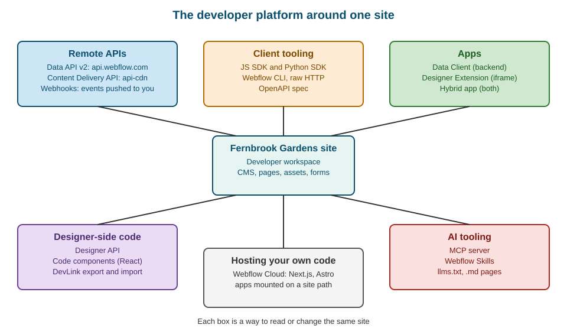

Developer Platform Overview
|
This content was generated with the assistance of AI and should be verified against the official documentation before being relied on in production. |
This page describes the Webflow developer platform as it was on 2026-10-28, the date on which its facts were checked against the developer documentation at developers.webflow.com. Almost every capability on it is available for free on a Developer workspace (described in The Developer workspace), so the examples in this sub-section can be run without a paid Site plan. Where a feature needs a paid Workspace plan, a CMS, Business or Ecommerce Site plan, or an Enterprise plan, the text says so; plans are named by tier only, never by price (the tiers are explained in Plans, Workspaces, Seats and Roles).
The developer tools used in the code examples of this sub-section are pinned to the versions that were current on the check date:
| Tool | Pinned version | Notes |
|---|---|---|
|
3.3.4 |
Exports |
|
2.0.0 |
Released 2026-03-12; requires Python 3.8 or later and earlier than 4.0 |
|
2.15.0 |
Requires Node.js 22.13 or later |
Data API |
v2 |
The default version; |
The running example is Fernbrook Gardens, a fictitious botanical garden whose website is built progressively across this sub-section. It keeps four Collections (Plants, Garden zones, Events and Journal) and publishes in English, Spanish and German. Its small team wants to automate three jobs: keep the plant catalogue in step with a spreadsheet maintained by the horticulturists, send form submissions to the visitor-services desk, and show the Journal in a separate application. Each job maps to a different part of the platform, and choosing the right part is the subject of this page.
The platform in one picture
Webflow’s developer documentation is organized by the surface a developer works against. There are two big families. The first family talks to a Webflow site from the outside, through HTTP: the Data API, the Content Delivery API and webhooks, wrapped by SDKs, the CLI and Apps. The second family runs code inside or next to the Webflow product: the Designer API (client-side JavaScript in the Designer), code components (React components used on the canvas), DevLink (exchanging components between Webflow and a codebase) and Webflow Cloud (hosting for full applications). AI tooling cuts across both: an MCP server, Webflow Skills and machine-readable documentation.

Reading the figure from the top: remote APIs are how a script or a service reads and writes site data; client tooling makes those calls convenient; apps package an integration so that other people can install it; Designer-side code changes what is possible on the canvas; hosting runs your own application next to the site; and AI tooling lets an agent drive the same operations in natural language.
Who uses which part
The platform has more entry points than any single developer needs. The table maps the people who work on Fernbrook Gardens to the parts they reach for first.
| Person | Typical need | Where to start |
|---|---|---|
Content editor |
Bulk-edit two hundred plant items, import a spreadsheet |
The CMS import and export described in CSV Import and Export; an MCP-capable assistant for bulk edits; the Data API when the job repeats |
Designer |
Reuse a React widget on the canvas, export components to a codebase |
|
Marketer |
Get a message when a form is submitted, publish on a schedule |
Webhooks, forms and the publish endpoints |
Frontend developer |
Render the Journal in a Next.js application |
The Content Delivery API, described in Content Delivery API and Headless; Webflow Cloud when the application should be hosted by Webflow |
Integration developer |
A product that other Webflow customers install |
Apps with OAuth, described in Apps Overview and OAuth |
The Data API
The Data API is Webflow’s RESTful API for building tools and applications for Webflow users. Its default version is v2; the reference also keeps a v2 Beta and the older v1. The reference describes the structure of the API as a set of resources (sites, pages, components, Collections and their items, assets, forms, custom code, Ecommerce and localization, among others) and offers an interactive explorer: the "Try it" button on the Get Sites endpoint lets you authenticate and send live requests from the documentation.
Four core concepts apply to every call, and each has its own page in this sub-section:
-
Authentication: a site token, a workspace token (an Enterprise feature) or an OAuth access token obtained by an App. See Data API: Authentication and Scopes.
-
Rate limits: per API key, in requests per minute, with response headers that report the budget.
-
Versioning: v2 is the default; breaking changes arrive in a new version rather than in place.
-
Error handling: a consistent error body and status codes.
The rate limits, as stated on the Data API rate-limit page on the check date, are:
| Plan | Requests per minute |
|---|---|
Starter and Basic |
60 |
CMS, Ecommerce and Business |
120 |
Enterprise |
Custom |
A Developer workspace has its own limit, given in The Developer workspace. Some endpoints have their own limits; the
site publish endpoint allows one successful publish per minute. A request that exceeds the limit receives HTTP 429 with
the error code too_many_requests, and the headers X-RateLimit-Limit, X-RateLimit-Remaining and Retry-After tell
the caller how long to wait. The official SDKs retry with exponential backoff automatically; a raw HTTP client must honour
Retry-After itself. Webflow’s advice is to use webhooks instead of polling.
Source: Data API: Rate limits
Source: Data API: Introduction
A first request
The smallest useful request lists the sites that a token can see. The token is a placeholder read from an environment variable; create a site token in the site’s settings under Apps and integrations, or use an App’s OAuth token.
export WEBFLOW_API_TOKEN="REPLACE_WITH_SITE_TOKEN"
curl --request GET \
--url https://api.webflow.com/v2/sites \
--header "Authorization: Bearer ${WEBFLOW_API_TOKEN}" \
--header "accept: application/json"Source: Data API: Introduction
The response is a JSON object with a sites array. Each entry carries the site id, its displayName, its shortName
(the subdomain of the webflow.io staging domain) and publishing timestamps. The id is the value that most other
endpoints take as a path parameter.
{
"sites": [
{
"id": "REPLACE_WITH_SITE_ID",
"displayName": "Fernbrook Gardens",
"shortName": "fernbrook-gardens",
"lastPublished": "2026-10-27T18:30:00.000Z"
}
]
}Source: Data API: Introduction
The response above is abbreviated to the fields used in this sub-section; the reference lists the complete schema, and more fields can appear as Webflow extends the API within a version.
What the Data API covers
The Data API is organized by resource. The table lists the areas used in this sub-section and the page that covers each.
| Area | What you can do | Page |
|---|---|---|
Sites |
List sites, read a site, list custom domains, publish |
|
Pages and components |
Read page metadata and page content, update content in secondary locales, read component properties |
|
CMS |
Collections, fields, staged and live items, bulk operations, publishing items |
|
Assets, forms and custom code |
Upload assets, read form submissions, register and apply scripts |
|
Ecommerce and localization |
Products, SKUs, orders, inventory, locales and localized content |
|
Webhooks |
Subscribe to events instead of polling |
The Content Delivery API
The Content Delivery API is not a separate product with separate endpoints; it is a cached, read-only front door to the
same published content. The documentation says to use the host api-cdn.webflow.com in place of api.webflow.com. It
serves the read endpoints for published content, namely listing the live items of a Collection
(/v2/collections/{id}/items/live) and getting one live item. The behaviour that matters is caching:
-
The first request goes to the Data API origin, and the response is stored in a CDN cache; identical later requests are served from the cache.
-
The
cf-cache-statusresponse header shows where a response came from:HITmeans the CDN cache,MISSorBYPASSmeans the origin. -
A cached response lasts 120 seconds on Enterprise plans and 300 seconds on other plans, and is then purged. A change to a published item can therefore take up to that long to appear.
-
Cached responses do not count against the plan’s rate limit; requests that reach the origin do.
-
Authentication is the same as for the Data API (site tokens and OAuth access tokens). Webflow recommends a separate token with CMS read-only permission for each delivery channel, so that revoking one channel does not break the others.
Source: Data API: Content delivery
The SDKs take the host as a configuration option. The JavaScript SDK uses baseUrl; the Python SDK uses an environment
object.
import { WebflowClient } from "webflow-api";
// Reads cached, published content of the Journal through the CDN host.
const cdnClient = new WebflowClient({
accessToken: process.env.WEBFLOW_API_TOKEN as string,
baseUrl: "https://api-cdn.webflow.com",
});
const journal = await cdnClient.collections.items.listItemsLive(
process.env.JOURNAL_COLLECTION_ID as string,
);
console.log(journal.items?.length ?? 0, "published Journal entries");Source: Data API: Content delivery
import os
from webflow.client import Webflow
from webflow import WebflowEnvironment
cdn_environment = WebflowEnvironment(
base="https://api-cdn.webflow.com/v2",
data_api="https://api.webflow.com/v2",
content_delivery_api="https://api-cdn.webflow.com/v2",
)
client_cdn = Webflow(access_token=os.environ["WEBFLOW_API_TOKEN"], environment=cdn_environment)
response = client_cdn.collections.items.list_items(os.environ["JOURNAL_COLLECTION_ID"])
for item in response.items or []:
print(item.id)Source: Data API: Content delivery
The Content Delivery API is the foundation of headless use of Webflow, in which the Webflow CMS holds the content and a separate application renders it. That pattern, including why the token must stay on the server, is the subject of Content Delivery API and Headless.
Webhooks
A webhook reverses the direction of the Data API: instead of the caller asking whether something changed, Webflow sends
an HTTP POST to a URL the developer controls when an event happens. The trigger types documented on the check date are:
| Family | Trigger types |
|---|---|
Forms |
|
Sites and pages |
|
Ecommerce |
|
Collection items |
|
Comments |
|
A webhook is created with a POST request that names the site, a triggerType and the destination url. The
form_submission trigger also accepts a filter that limits notifications to one form. The request needs a site token or
an App’s bearer token that holds the forms:read scope (the scope list is in
Data API: Authentication and Scopes).
curl --request POST \
--url https://api.webflow.com/v2/sites/REPLACE_WITH_SITE_ID/webhooks \
--header "Authorization: Bearer ${WEBFLOW_API_TOKEN}" \
--header "content-type: application/json" \
--data '{
"triggerType": "form_submission",
"url": "https://hooks.fernbrook-gardens.example/webflow/forms"
}'Source: Data API: Working with webhooks
The delivery rules are strict, and they are the reason a receiver must be fast and idempotent:
-
A site can have at most 75 webhooks per trigger type.
-
The receiving endpoint must answer with HTTP 200. A non-200 response, a redirect, an SSL problem or a timeout counts as a failure.
-
A failed delivery is retried up to three times, at ten-minute intervals.
-
A webhook that keeps failing is deactivated, the owner is notified by email, and reactivation requires contacting Webflow support.
-
Each delivery carries the headers
x-webflow-timestamp(Unix epoch time) andx-webflow-signature(a SHA-256 HMAC). To validate manually, compute the HMAC of the string made of the timestamp, a colon and the raw body, compare it with the signature, and reject deliveries whose timestamp is older than five minutes. Webflow recommends the SDK’sverifySignaturemethod over hand-written validation. -
The signing key is a per-webhook secret for webhooks created through a site token after 2025-04-14, or the OAuth App’s client secret for webhooks created by an App. Webhooks created in the dashboard do not include the headers needed for signature validation, so they cannot be verified.
Source: Data API: Working with webhooks
SDKs
Webflow publishes two official client libraries for the Data API, and the reference links each to its package page.
| Language | Package | Install | Pinned version |
|---|---|---|---|
JavaScript and TypeScript |
|
|
3.3.4 |
Python |
|
|
2.0.0 |
Source: Data API: SDKs
The version pins appear in the dependency files below. Pinning exactly, rather than with a range, keeps a nightly job from changing behaviour when a new SDK release appears.
{
"name": "fernbrook-sync",
"private": true,
"type": "module",
"engines": { "node": ">=22.13.0" },
"dependencies": {
"webflow-api": "3.3.4"
},
"devDependencies": {
"@webflow/webflow-cli": "2.15.0",
"typescript": "7.0.2",
"tsx": "4.20.6"
}
}Source: webflow-api on npm
webflow==2.0.0Source: webflow on PyPI
A complete first script that lists the Fernbrook sites with the JavaScript SDK looks like this.
import { WebflowClient } from "webflow-api";
const token = process.env.WEBFLOW_API_TOKEN;
if (!token) {
throw new Error("Set WEBFLOW_API_TOKEN before running this script");
}
const webflow = new WebflowClient({ accessToken: token });
const { sites } = await webflow.sites.list();
for (const site of sites ?? []) {
console.log(`${site.displayName} (${site.id})`);
}Source: Data API: SDKs
The Python equivalent follows the same shape with snake_case names.
import os
from webflow.client import Webflow
client = Webflow(access_token=os.environ["WEBFLOW_API_TOKEN"])
response = client.sites.list()
for site in response.sites or []:
print(f"{site.display_name} ({site.id})")Source: Data API: SDKs
Timeouts, retries, typed errors and the choice between the SDKs and raw HTTP are covered in Data API: SDKs, Limits and Errors.
The OpenAPI specification
The Data API is described by an OpenAPI specification from which the reference pages and the SDKs are generated. A team that prefers raw HTTP, or that wants a client in a language without an official SDK, can generate one from the specification. The specification is distributed with the SDK repositories and the reference; the exact download location is given in Data API: SDKs, Limits and Errors. Whichever route is used, a generated client does not include the retry behaviour of the official SDKs, so the 429 handling described above has to be written by hand.
The Webflow CLI
The Webflow CLI is a command-line tool distributed on npm as @webflow/webflow-cli. This sub-section pins version
2.15.0, which needs Node.js 22.13 or later. The authentication page documents the basic session commands:
npm install --global @webflow/webflow-cli@2.15.0
webflow auth login
webflow auth status
webflow auth logout
# Webflow data hosted in the EU region (CLI 2.9.0 or later)
webflow --region eu auth login
webflow --region eu sites listSource: Webflow CLI: Authentication
The command reference groups the commands into families:
| Family | Purpose |
|---|---|
|
Log in and out, check status, set telemetry preferences |
|
List and inspect sites, view domains, publish |
|
Manage Collections, fields and items, including publishing |
|
List, upload and update assets, manage asset folders |
|
List forms, view and export submissions |
|
List templates, initialize, bundle and serve Designer Extensions |
|
Export site components as a local React bundle, share components with a workspace, or bundle them locally |
|
Manage Webflow Cloud apps: init, deploy, environments, deployments, logs and environment variables |
|
Deprecated aliases for |
|
Show the path of the latest log file |
Global options such as --no-input, --manifest and --verbose work with every command; --no-input is the one that
matters for scripts and CI, because it stops the CLI from waiting for a prompt. On the check date the command reference
notes that the apps namespace is available in the pre-release channel (npm install -g @webflow/webflow-cli@next).
The CLI deserves its own page: Webflow CLI.
Source: Webflow CLI: Command reference
Apps
A Webflow App packages an integration so that it can be installed on sites and workspaces, authorized with OAuth and, optionally, listed in the Webflow Marketplace. The documentation distinguishes three kinds:
| Kind | Runs | Typical use |
|---|---|---|
Data Client |
Outside the Designer, on your server |
Sync the CMS with an external database, send form submissions to a CRM, automate publishing |
Designer Extension |
Inside the Designer, in an iframe |
Add panels, automate design tasks, embed content from other services |
Hybrid app |
Both |
One product with a backend part and a Designer part |
To build an App you need a Workspace in which you have Admin permission. A Developer workspace, which is requested separately, gives access to advanced features such as the Enterprise-only APIs and Localization. Distribution is either public, through the Webflow Marketplace (which also opens monetization opportunities), or private, for your own organization or selected clients.
Source: Webflow Apps
Registration, the OAuth authorization-code flow and the review process for Marketplace listings are in Apps Overview and OAuth, Hybrid Apps and Publishing Apps and the Marketplace.
The Designer API
The Designer API is the odd one out: it is not an HTTP API. The documentation describes it as client-side JavaScript APIs that execute in the browser through an iframe. A developer builds a Designer Extension with the Webflow CLI and runs it locally against a Webflow project; the extension’s code calls the APIs to read and change the project, the changes appear in the Designer in real time, and the updated object is returned to the extension.
The APIs are organized into areas:
-
Elements: create and modify canvas elements, with their properties, content and styles.
-
Styles: manage reusable CSS classes.
-
Components: create and modify reusable groups of elements.
-
Variables: define global values for numbers, percentages, sizes, colors and fonts.
-
Interactions: list, read, create, set and remove interactions.
-
Pages: manage page properties, SEO settings and site structure.
-
Extension utilities: manage the extension’s behaviour and its interaction with the Designer.
Working with an object takes two steps: obtain a reference (an existing object, for example with
webflow.getSelectedElement(), or a new one, for example with element.after()), then call methods on it (for example
element.setCustomAttribute()). The requirements are a registered App, a Designer Extension created with the CLI, and the
extension running on a project.
Source: Designer API: Introduction
The scaffolding commands use the extension family of the CLI.
webflow extension list
webflow extension init fernbrook-zone-tools
cd fernbrook-zone-tools
npm installSource: Webflow CLI: Command reference
The Designer API is covered in depth in Designer Extensions and the Designer API.
DevLink
DevLink is described as the bridge between design and code for teams working in Webflow. It is the interface between external codebases and Webflow and supports three jobs:
-
importing React components into Webflow (the components then appear on the canvas as code components);
-
exporting Webflow components as React components;
-
deploying applications to Webflow Cloud, which hosts Next.js and Astro applications.
Component export transforms a Webflow design into React code. The documented requirements are a Webflow account and a project, a paid Workspace plan or a CMS, Business or Ecommerce Site plan, Site Admin or Owner permission, and a React development environment.
Source: DevLink: Overview
The CLI drives both directions:
# Webflow to React: export the components of the current site as a local bundle
webflow devlink export
# React to Webflow: share an existing component library with a workspace
webflow devlink importSource: Webflow CLI: Command reference
The details are in DevLink Export.
Code components
Code components are React components that work inside Webflow sites and in external sites. A React component built for another site can be used on the canvas and configured with props, slots and variants, and components can be kept in sync between Webflow and non-Webflow sites through DevLink. The documentation names three types: components created in the Designer (which can optionally be exported as React components), components imported from an external repository, which it calls DevLink code components, and AI-generated components, which have their own limitations.
In the codebase a developer wraps a React component with declareComponent and defines the prop types so that the
component appears in the Designer. DevLink bundles and publishes the components as a shared library, and the library is then
installed on any site in the workspace. Designers place the component on the canvas and set its props and slots in the
right panel; styling comes from each site’s variables.
Source: Code components: Introduction
A Fernbrook example is a plant-care card that shows a watering schedule. The component file is plain React; the declaration file is what makes it available in the Designer.
// src/PlantCareCard.webflow.tsx
import { declareComponent } from "@webflow/react";
import { props } from "@webflow/data-types";
import { PlantCareCard } from "./PlantCareCard";
export default declareComponent(PlantCareCard, {
name: "Plant care card",
description: "Shows the watering and light needs of a plant",
props: {
commonName: props.Text({ name: "Common name", defaultValue: "Lavender" }),
wateringDays: props.Number({ name: "Watering interval (days)", defaultValue: 7 }),
},
});The full authoring workflow is in Code Components.
Webflow Cloud
Webflow Cloud deploys applications from GitHub repositories to Webflow. The deploy wizard clones a starter template into the developer’s GitHub account, creates the app and its first environment, and runs the first deployment. The wizard’s built-in templates cover Astro and Next.js; the Webflow-Examples organization on GitHub provides official starters for Next.js, Astro, React, Vue, Svelte, plain JavaScript and a static site with no build step, and many of them also come in a version with bindings that includes a SQLite database, object storage and key-value storage. An existing Astro or Next.js application can be configured for Webflow Cloud.
An application is deployed either as a standalone app on its own domain or onto an existing Webflow site at a mount path
such as /app. Environments map branches to deployed paths, a push to the deployed branch starts a new deployment
automatically, and build logs are available for every deployment. The prerequisites are a Webflow account, a GitHub
account, permission to create apps in the Workspace, and permission to install the Webflow Cloud GitHub app on the target
GitHub account or organization.
Source: Webflow Cloud: Getting started
# Run from the cloned starter directory
webflow cloud deploySource: Webflow Cloud: Getting started
Webflow Cloud is where server-side logic belongs when a Webflow page needs it, because no server-side code runs on a Webflow page itself. Its pages are Webflow Cloud, Webflow Cloud Storage and Webflow Cloud Deployments and Environments.
AI tooling
Three pieces make the platform usable by AI agents.
The MCP server
The Webflow MCP server connects AI agents and tools to Webflow projects. It is built on Webflow’s APIs and exposes them as tools, so a user describes the goal in natural language and the agent makes the calls and handles authentication. The documentation lists its coverage:
-
Design and build: layouts, elements, styles, components, interactions based on GSAP, custom code, custom fonts and design systems (variables, color schemes, typography, spacing).
-
Manage: CMS Collections and items, pages and SEO metadata, assets, forms, sitemap settings, comments and Webflow Cloud apps.
-
Analyze and optimize: read-only traffic, engagement and experiment data from Analyze, Optimize and AEO.
-
Automate: multi-step workflows such as quality audits and changes across sites.
-
Governance: site-specific Agent Instructions, permissions tied to the user’s existing roles, team administration and a site activity log of agent changes.
The documented limits matter when planning an automation. Each authorization covers a single workspace, and switching workspaces means authenticating again (for connector-based clients such as Claude and ChatGPT, removing and reinstalling the connector). The website project must already exist, because the MCP server cannot create projects. Analyze, Optimize and AEO need an optional add-on on a paid Site plan; page branches and team administration need an Enterprise plan. Classic interactions are not supported, only interactions with GSAP. Some capabilities, such as visual snapshots, image uploads and reading the current selection, need the Designer open with the Bridge App connected. Secret environment variables for Webflow Cloud apps are set with the CLI, because the MCP server never accepts or returns secret values. It cannot create new localized CMS items, although it can update existing ones and the static content of secondary locales.
Source: MCP server: Overview
For Claude Code, the installation page gives a single command, after which the first use opens a browser window for OAuth login in which the user chooses the sites to grant access to and installs the MCP Bridge App.
claude mcp add --transport http webflow https://mcp.webflow.com/mcp
# Start Claude Code, then run /mcp and select the Webflow server to authorize it
claude
# Scope the connection to the current project folder instead
claude mcp add --transport http fernbrook-webflow https://mcp.webflow.com/mcp -s projectSource: MCP server: Claude Code
Installation pages exist for other clients as well (ChatGPT, Claude Desktop, Codex and Grok Build appear in the documentation). The page MCP Server and AI Agents covers the tools, permissions and risks in detail.
Webflow Skills
Webflow Skills are pre-built agent capabilities. Each skill combines several MCP tools into a specialized workflow, so the user states a goal and the skill orchestrates the calls. They need an agent that supports skills and the Webflow MCP server configured in that agent. The documented skills fall into groups:
| Group | Skills |
|---|---|
Content management |
Bulk CMS update, CMS collection setup, CMS best practices |
Site health and optimization |
Site audit, asset audit, link checker, accessibility audit, site activity log (needs an Enterprise plan) |
Publishing and code |
Safe publish, custom code management, Flowkit naming |
Code components |
Code components, component scaffold, convert component, deployment guide, development environment, validate, troubleshoot deployment |
Webflow CLI |
Designer extensions, DevLink commands, CLI troubleshooter, Webflow Cloud commands |
The installation routes are an interactive installer for any supported agent, a plugin marketplace for Claude Code, and a
manual upload of SKILL.md files for Claude Desktop.
# Interactive installer for any supported agent
npx skills add webflow/webflow-skills
# Claude Code, from the plugin marketplace
claude plugin marketplace add webflow/webflow-skills
claude plugin install webflow-skills@webflow-skillsSource: MCP server: Webflow Skills
llms.txt and Markdown pages
The documentation itself is prepared for agents. The index of the whole documentation is at
https://developers.webflow.com/llms.txt, each section has its own index (appending /llms.txt to a section URL returns
it), and appending .md to any documentation page URL returns the page as clean Markdown. The documentation site also
exposes an MCP endpoint at https://developers.webflow.com/_mcp/server, according to the AI tools page.
curl --silent https://developers.webflow.com/llms.txt | head -n 40
curl --silent https://developers.webflow.com/data/docs/working-with-webhooks.mdSource: Data API: AI tools
Choosing the right tool
The same outcome can often be reached by several routes. The decision depends on where the code runs, who triggers it and who needs to see it. The table gives the default choice for the jobs that come up most often at Fernbrook Gardens.
| Job | Use | Why |
|---|---|---|
Import the horticulturists' spreadsheet once |
CSV import |
No code, and the editor can do it |
Keep the Plants Collection in step with a spreadsheet every night |
Data API with an SDK, run by a scheduled job |
Repeatable, idempotent and reviewable in git |
Tell the visitor-services desk when a form is submitted |
Webhook with a small receiver |
Event-driven; no polling against a 60 or 120 requests-per-minute budget |
Show the Journal in a Next.js application |
Content Delivery API |
Cached, read-only, and cheap against the rate limit |
Host that Next.js application |
Webflow Cloud, or your own host |
Webflow Cloud keeps the application next to the site; a separate host gives full control |
Reuse a React widget for designers |
Code components with DevLink |
Designers configure it on the canvas |
Add a bulk-rename button inside the Designer |
Designer Extension |
The Designer API runs in the Designer, not over HTTP |
Let other Webflow customers install your integration |
An App with OAuth |
Per-customer authorization and optional Marketplace listing |
Ask an assistant to audit alt text across a site |
MCP server and a Webflow Skill |
Natural-language access that respects the user’s own roles |
Export the site’s front end to host elsewhere |
Code export |
See Code Export and Portability; forms and CMS do not export |
Three rules of thumb summarize the table. First, prefer events to polling: webhooks save rate limit and reduce latency. Second, prefer the read-only, cached host for delivery and keep write-capable tokens out of any browser. Third, use the smallest token that works: a site token with only the scopes a script needs, or an App that asks for specific scopes, rather than a broad token shared among scripts.
The Developer workspace
Every example in this sub-section runs against a site in a Developer workspace. The documentation describes it as a free workspace for App developers to test premium Webflow features while building and integrating Apps; it is not for production use.
| Item | Value on the check date |
|---|---|
Cost |
Free; site plans bought inside the workspace are billed at the standard rates, with no discount |
Workspace users |
Up to three, for collaboration and testing |
API rate limit |
120 requests per minute |
Unhosted sites |
Unlimited |
Monthly site visitors |
1,000 |
Custom code, Site Activity Log, Page Branching |
Enabled |
Publishing to production, code export, site transfer |
Disabled |
Number per account |
One developer workspace per owner |
Source: Data API: Developer workspace
To create one, open the dashboard, choose to create a developer workspace, enter a name and a reason of at least twenty characters that describes what you plan to build, confirm that the workspace is only for building and testing Apps and integrations, and submit. An existing workspace can instead be converted by asking Webflow support. The documentation warns that moving to another Workspace plan means losing the Site Activity Log and Page Branching, and that the plan is not suitable for hosting production sites or for relying on official support for these capabilities.
The consequences for the examples are practical:
-
Examples that publish do so to the
webflow.iostaging domain, which is available without a plan; publishing to a custom domain is a production activity and is disabled in the workspace. -
An example that needs the Enterprise-only APIs or Localization says so, and uses the Developer workspace access to those features described on the Apps page.
-
Code export is disabled, so the export examples are explained with sample output rather than run.
-
A Developer workspace has 1,000 visitors a month, so load tests and public launches belong elsewhere.
Environment for the examples
All scripts read configuration from environment variables so that no secret enters a repository. Create a .env file that is
listed in .gitignore, and never paste a real token into a page, a ticket or a chat.
# .env (listed in .gitignore; the values below are placeholders)
WEBFLOW_API_TOKEN=REPLACE_WITH_SITE_TOKEN
WEBFLOW_SITE_ID=REPLACE_WITH_SITE_ID
PLANTS_COLLECTION_ID=REPLACE_WITH_COLLECTION_ID
JOURNAL_COLLECTION_ID=REPLACE_WITH_COLLECTION_IDSource: Data API: Site token
Node.js 22.13 or later reads such a file directly:
node --env-file=.env --import tsx scripts/list-sites.tsSource: Webflow CLI: Authentication
Security checklist for every tool
The tools differ, but the security rules do not.
-
Tokens are secrets. A site token carries the scopes it was created with and works until it is revoked. Store tokens in a secret manager or in CI secrets, rotate them when a person leaves, and revoke any that appear in a log.
-
Least privilege. Create one token per job and give it only the scopes the job needs; the Content Delivery API guidance of one read-only token per channel is a good model for all jobs.
-
Never ship a write token to a browser. Anything bundled into front-end code is public. Server-side code, a Webflow Cloud function or a serverless function holds the token and exposes only the data the page needs.
-
Verify webhook signatures with the SDK, and reject old timestamps; dashboard-created webhooks cannot be verified, so use API webhooks for anything that triggers an action.
-
Respect the rate limit. Back off on 429, honour
Retry-After, batch work and prefer webhooks to polling. -
Treat agent access as user access. The MCP server acts with the permissions of the user who authorized it, so authorize with the narrowest role that does the job and review the site activity log for agent changes.
Common pitfalls
-
Confusing the two hosts.
api.webflow.comreads and writes;api-cdn.webflow.comis read-only and cached. A script that writes through the CDN host fails, and a script that reads live content through the CDN host sees data that is up to 120 or 300 seconds old. -
Reading the staged Collection when live data is wanted. Items have a staged and a live state; the live endpoints return only published items. The details are in Data API: CMS.
-
Assuming the Designer API is an HTTP API. It runs in an iframe in the Designer and needs a running extension; a server script cannot call it.
-
Polling instead of subscribing. A loop that lists items every few seconds spends the minute’s budget quickly; use the
collection_item_changedandcollection_item_publishedtriggers. -
Following an old tutorial. Material written for the v1 API, for earlier DevLink behaviour or for older CLI versions disagrees with the current documentation; the corrections are collected in Where Older Books and Tutorials Are Outdated.
-
Expecting the MCP server to create a project. It operates on projects that already exist in the dashboard.
Where to go next
| If you want to | Read |
|---|---|
Authenticate and understand scopes |
|
Write a script against the CMS |
|
Be told when something changes |
|
Run the CLI in CI |
|
Build a headless front end |
|
Package an integration |
|
Automate with an assistant |